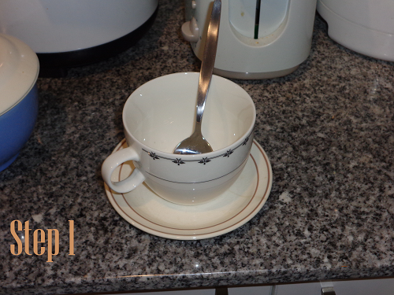
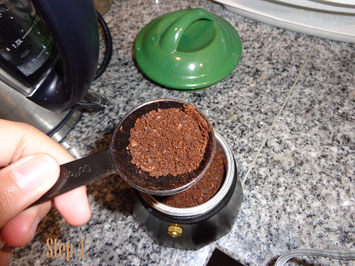
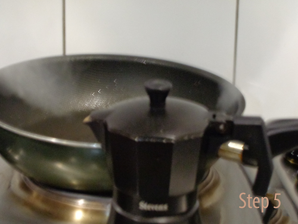
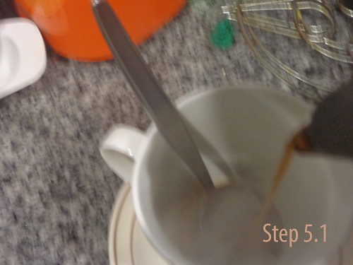
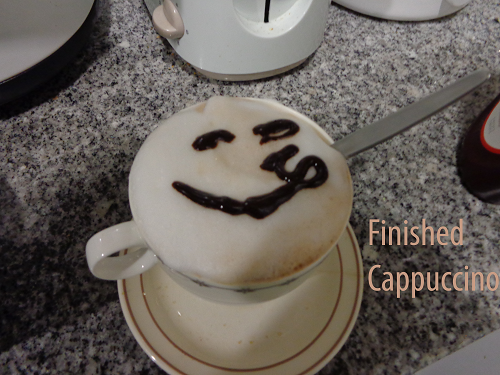
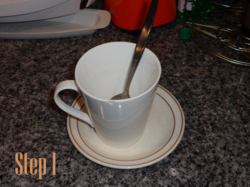
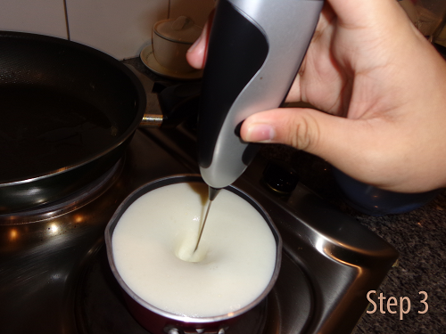
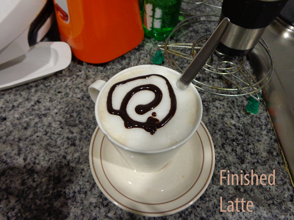
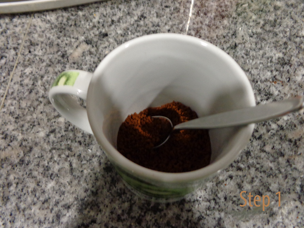
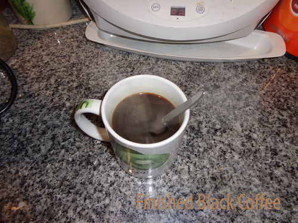

Here is where we would learn some of the basic coffee drinks that will basically taste the same but have just these minor differences that makes them look and feel "unique" in a sense.
- Cappuccino
-
Ingredients needed: 7g ground coffee, Chilled Milk and Chocolate or Cinnamon to act as a garnish.
Prepare the cup necessary for the coffee as well as placing brown sugar onto the cup, if wanting to do so, before the coffee or steamed milk for it to be melted once the hot coffee is poured onto the cup.
Foam the milk by placing the milk in a jug and then steam it on the steaming wand on the espresso machine, but in a cheap way you could warm the milk on the stove by placing it on a small pot and stir it by swaying the pot or jug either clockwise or counter-clockwise or use an automatic stirrer to do so until it turns velvety white.
Then place the ground coffee on the single espresso shot group heads on the espresso machine, but the cheaper method is by placing it on a group head on a low-tech espresso machine(or flask) and then crush it into place by using a spoon in order for the coffee to not get runny or soggy after being extracted of its juices.
Place the flask on the stove and wait for approximately 7 minutes, or wait until the flask starts steaming and whistling, and then pour the extracted coffee onto a cup that is 250 ml, for single shot, or 350ml, for double-shot, only until it reaches a 1/3 of the total size of the cup.
Pour the entire jug filled with the steamed milk until it fills the entire cup along with the foam in order for the proportion to be exact as well as the drink filling the entire cup as the proportion for the cappuccino is a 1/3 coffee, a 1/3 milk, and a 1/3 foam.
Finish by sprinkling chocolate or cinammon or placing chocolate syrup.
     - Latte
-
Ingredients needed: 7g ground coffee, Chilled Milk.
Prepare the cup necessary for the coffee as well as placing brown sugar onto the cup, if wanting to do so, before the coffee or steamed milk for it to be melted once the hot coffee is poured onto the cup.
Foam the milk by placing the milk in a jug and then steam it on the steaming wand on the espresso machine, but in a cheap way you could warm the milk on the stove by placing it on a small pot and stir it by swaying the pot or jug either clockwise or counter-clockwise or use an automatic stirrer to do so until it turns velvety white.
Then place the ground coffee on the single, or double-shot, espresso shot group heads on the espresso machine, but the cheaper method is by placing it on a group head on a low-tech espresso machine(or flask) and then crush it into place by using a spoon in order for the coffee to not get runny or soggy after being extracted of its juices.
Place the flask on the stove and wait for approximately 7 minutes, or wait until the flask starts steaming and whistling, and then pour the extracted coffee onto a cup that is 250 ml, for single shot, or 350ml, for double-shot, only until it reaches its end.
Pour the entire jug filled with the steamed milk until it fills the entire cup along without the foam and finish it with a thin layer of foam so that it looks elegant and a bit less thicker than the cappuccino.
   - Long or Short Black Coffee
-
Ingredients needed: 7g ground coffee.
Prepare the cup necessary for the coffee as well as placing brown sugar onto the cup, if wanting to do so, before the coffee or steamed milk for it to be melted once the hot coffee is poured onto the cup.
Then place the ground coffee on the single, or double-shot if long black, espresso shot group heads on the espresso machine, but the cheaper method is by placing it on a group head on a low-tech espresso machine(or flask) and then crush it into place by using a spoon in order for the coffee to not get runny or soggy after being extracted of its juices.
Place the flask on the stove and wait for approximately 7 minutes, or wait until the flask starts steaming and whistling, and then pour the extracted coffee onto a cup that is 100 ml, for single shot(demitasse), or 150ml(tulip), for double-shot, only until it reaches its end but do not let it overfill the cup so aas to leave room for sugar to be added.
Finish by adding a preffered option by adding a 70-100ml of hot water as a side for the drink.
 